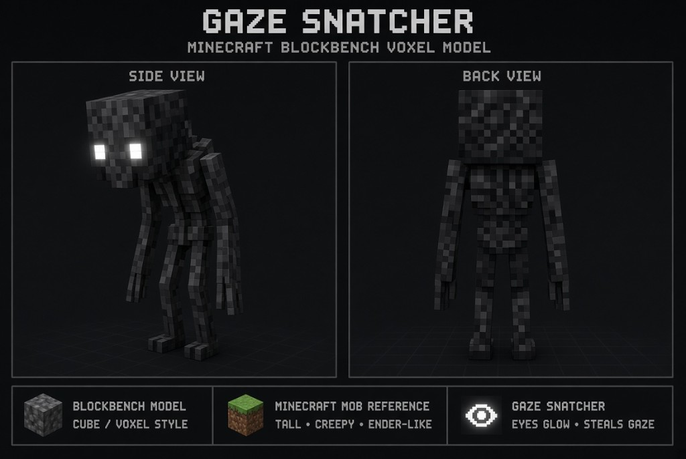
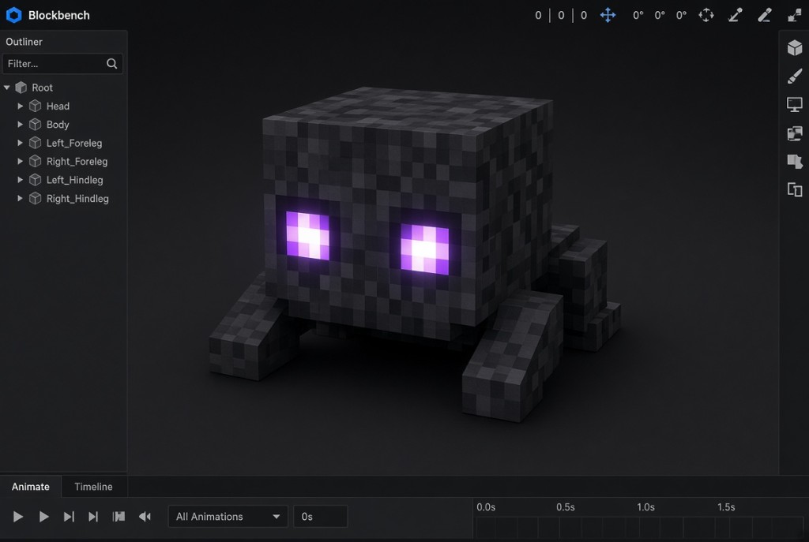

At a glance
Gaze Snatchers is a dual-loader mod (Fabric + NeoForge) for Minecraft 1.21.11 and the 26.x matrix. All logic runs server-side: singleplayer and multiplayer ready.


Sleep spawn
At night, lying down can summon a Gaze Snatcher that stands still and locks onto you.
Silent theft
Ignore its gaze long enough and it steals an inventory item, then may despawn.
Death split
Killing the adult bursts it into 2–4 hostile, fast babies.
Defense & crafting
Gaze Shards craft the Gaze Ward Amulet and Gaze Draught. See Items.
Key items

Gaze Shard
Drop / craft ingredient

Gaze Ward Amulet
Slows stealing

Gaze Draught
Gaze Clarity effect